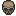

En ridder av røyk og aske som forstår ildens krefter. Den er immune mot ild og kan bruke alle typer utstyr de ønsker.
Умения · 7
Способности · 6

ApexI kamp har du en Apexskapasitet som fylles når du tar skade. Når kapasitet er full, kan Apex trylleformler og ferdigheter brukes.
Apexstigning: +50%

Gudenes KraftDin spillerstatistikk økes når du bekjemper bosser i verdenen.

Staying PowerPositive status effects last longer in battle while negative status effects fade faster.
Buff Varighet: +40%Debuff Svekking: +40%

LivsspisingDu får ofte tilbake HP ettersom du skader motstanderen.
Livsspising: +10%

Ny SjanseDu har en sjanse å unngå å dø i kamp.
Ny Sjanse: 50%

Bestialsk BåndDu får tilgang til din følgers Nivå 1 Bestialske Båndeffekt.
Bestialsk Bånd: Nivå 1

Leviathan
★8ID 33NB/без RU
En ridder av hav og is som har mestret vannets kraft. Den er immun mot vann og kan bruke alle typer utstyr de ønsker.
Умения · 7
Способности · 6
ApexI kamp har du en Apexskapasitet som fylles når du tar skade. Når kapasitet er full, kan Apex trylleformler og ferdigheter brukes.
Apexstigning: +50%
Gudenes KraftDin spillerstatistikk økes når du bekjemper bosser i verdenen.
Staying PowerPositive status effects last longer in battle while negative status effects fade faster.
Buff Varighet: +40%Debuff Svekking: +40%

ManaspisingDet er en høy sjanse for at ferdigheter og trylleformler ikke bruker mana.
Manaspising: +25%

Mystisk FjærDin sjanse for å unngå angrep øker ettersom du tar skade.
Maksimal Unngåelsessjanse: 60%
Bestialsk BåndDu får tilgang til din følgers Nivå 1 Bestialske Båndeffekt.
Bestialsk Bånd: Nivå 1

Nekromanser
★8ID 37NB/без RU
En forvist magiker fra Avalon som bruker de mørke kreftene av de døde for å beseire fiendene sine. Den er immun mot mørkemagi og kan bruke utstyr for magikere.
Умения · 13
Способности · 4
BloodflasksUtilizing elemental spells in battle will charge up to two Manaflasks and two Bloodflask , allowing you to unleash either Manaflask abilities or Blood magic when fully charged. You will start battle with one Manaflask half filled and one Bloodflask half filled. Exploiting elemental weaknesses in battle will charge Manaflasks faster.
Manaflasks: +2 / Bloodflasks: +2

NekromansiDin spillerstatistikk økes når du bekjemper fiender.
ManarushDu kan bruke mana for å unnslippe døden i kamp.
Ny Sjanse: 50%Manarush: 50% mana
LivsspisingDu får ofte tilbake HP ettersom du skader motstanderen.
Livsspising: +10%
En ridder av lyn og torden som har mestret himmelens kraft. Den er immun mot lyn og kan bruke alle typer utstyr de ønsker.
Умения · 7
Способности · 6
ApexI kamp har du en Apexskapasitet som fylles når du tar skade. Når kapasitet er full, kan Apex trylleformler og ferdigheter brukes.
Apexstigning: +50%
Gudenes KraftDin spillerstatistikk økes når du bekjemper bosser i verdenen.
Staying PowerPositive status effects last longer in battle while negative status effects fade faster.
Buff Varighet: +40%Debuff Svekking: +40%

OppladingHvis du gjør et kritisk treff får du igjen HP og mana.
HP Oppladning med Kritisk Treff: 25%
Ny SjanseDu har en sjanse å unngå å dø i kamp.
Ny Sjanse: 50%
Bestialsk BåndDu får tilgang til din følgers Nivå 1 Bestialske Båndeffekt.
Bestialsk Bånd: Nivå 1
Отчаянный наёмник королевства Аннун, обученный утерянным приёмам арканы. Неуязвим для стихии арканы и может использовать снаряжение вора.
Умения · 10
Способности · 6

Рвение IIДаёт возможность получить дополнительный ход после совершения действия.
Рвение: +15%

Вечный свет IIОт героя исходит яркий свет, разгоняющий тьму и повышающий радиус обзора. Также характеристики героя постепенно увеличиваются по мере нахождения в игре. [Данный бонус не действует в поединках].
Обзор: +20%

Мастер арканыМастер знаний и приемов арканы. Все физические атаки и умения имеют шанс вызвать у противника состояния заморозки, паралича, горения или гниения.
На врага: Заморозка (5%), Паралич (5%), Горение (5%), Гниение (5%)

Аптекарь IIВы мастер зельеварения. Восполнение здоровья и маны при помощи предметов-лекарств повышено на 50%.
Лечение: +50%
Мистическое пероШанс уклонения от атак увеличивается по мере снижения запаса здоровья героя.
Макс шанс уклона: 60%
ПерезарядкаПри нанесении критического удара герой восстанавливает некоторое количество здоровья и маны.
Всплн здрв по криту: 25%

Великий зовущий
★8ID 61RU
Довольно опытный последователь культа Призывателей Элизиума. Этот класс не обладает большой мощью, однако способен не только призвать различных могущественных существ в бой, чтобы они сражались на его стороне, но и сделать так, что в начале боя они появятся самостоятельно. Может использовать снаряжение мага, не может использовать обычных постоянных питомцев.
Умения · 6
Способности · 4

Молчаливый призыв IIВ начале боя будет автоматически призвано первое существо из выставленных умений призыва.
Быстрый призыв: 1

Способный призывательПризванные вами существа становятся немного сильнее.
Хар-ки призванных: +75%

Светоч ЭлизиумаПризванные существа перейдут на следующие этажи подземелья вместе с героем.
+Светоч

Фаланга IIПризванные существа имеют шанс прикрыть героя от входящего урона в бою.
Прикрытие призванными: +23%
Рыцарь природы и равновесия, который воистину овладел силами земли. Неуязвим для магии земли и может использовать любое снаряжение, какое пожелает.
Умения · 7
Способности · 6
НакалШкала Накала в бою заполняется по мере получения героем урона. По достижении полного Накала герой может использовать умения и заклинания Накала.
Скорость Накала: +50%
Сила боговХарактеристики героя увеличиваются по мере убийства боссов. [Данный бонус не действует в поединках].
Сила упорстваПоложительные состояния и баффы держатся дольше, а негативные состояния и дебаффы спадают быстрее.
Длтлнст баффов: +40%Спадение дебаффов: +40%

СтойкостьГерой реже подвергается состояниям.
Защита от состояний: +35%
Мистическое пероШанс уклонения от атак увеличивается по мере снижения запаса здоровья героя.
Макс шанс уклона: 60%
Звериные узыГерою доступен эффект Звериных уз 1-го ранга.
Звериные узы: Уровень 1

Дозорный Атласа / Дозорная Афины
★8ID 36RU
Непоколебимый воин света королевства Лионесс, который хорошо разбирается в методах защиты и выживания. Неуязвим для света и может использовать снаряжение воина.
Умения · 11
Способности · 5

Рикошет IIIАтаки героя имеют дополнительный шанс рикошета по любому противнику в бою в размере 25 процентов от нанесённого урона.
Шанс рикошета: +15% / Рикошет: +25%

Герб Лионесса IIХарактеристики героя увеличиваются по мере убийства противников из армии восставших и берсерков. [Данный бонус не действует в поединках].

Плечи великановВард героя усилен мощью великанов. Вард активируется в бою автоматически и восстанавливается каждый ход.
Начало варда: +7 turnsВосст варда: +5%
Второй шансГерой имеет шанс избежать поражения в бою.
Второй шанс: 50%
СтойкостьГерой реже подвергается состояниям.
Защита от состояний: +35%
Один из высших орденов воинов нетруссов и валькирий, относящийся к мастерам Вальгаллы. Неуязвим для стихии драконов, имеет особые связи с животными и может использовать снаряжение как воина, так и мага.
Умения · 7
Способности · 6

Истребитель драконовХарактеристики героя увеличиваются по мере убийства драконов. [Данный бонус не действует в поединках].

Сила ВальгаллыАтаки могут вызывать состояние недуга и могут чаще наносить критический урон. Питомец также становится сильнее и может атаковать чаще.
Критшанс: +5%Характеристики питомца: +65%Частота действий питомца: +5%На врага: Недуг (5%)

Выучка ВальгаллыПитомец чаще применяет способности по ситуации в бою.
ИИ питомца: +5%
Звериные узы IIГерою доступны эффекты Звериных уз 1-го и 2-го рангов.
Звериные узы: Уровень 2
ПерезарядкаПри нанесении критического удара герой восстанавливает некоторое количество здоровья и маны.
Всплн здрв по криту: 25%
Нерастрата маныВысокий шанс того, что умение или заклинание не потратит ману.
Нерастрата маны: +25%